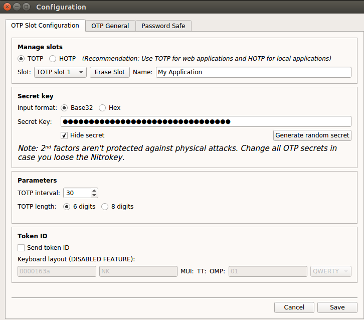
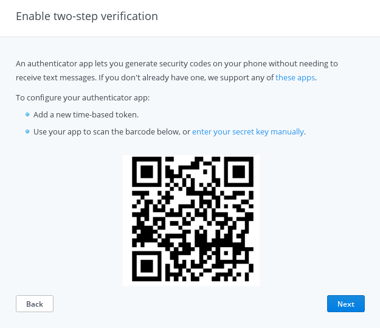

Share Key
How or whether you share the private totp key with the user will depend on what facilities you want to support for TOTP authentication. If you decide to use SMS-based TOTP authentication, you don’t ever share the private key with the user.
1. Secure USB

If a user is using a USB dongle, such as a Nitrokey, the hardware is accompanied
with management software that saves the private totp key to USB memory. A user will copy/paste
the key into the software’s interface and save the record to memory.

To facilitate this method of storage, share the key as a string, either in base32 or hex format. 
2. QR Code

If a user is using a mobile application, such as Google Authenticator, the
application can read the private key as a QR code. passlib.totp facilitates
QR code generation. Consult its documentation to learn how.